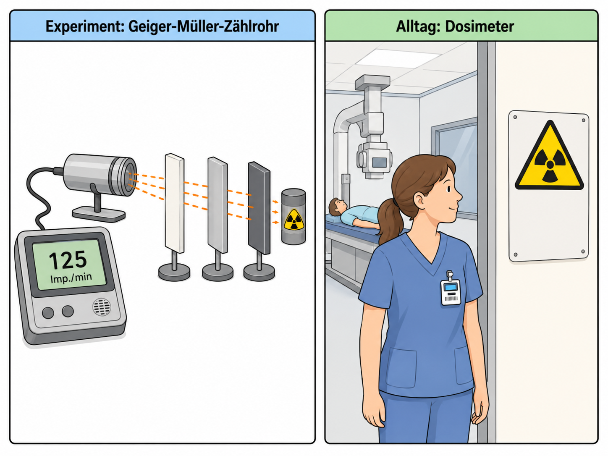

Nachweis, Absorption und Dosimetrie
Wie misst man unsichtbare Strahlung und entscheidet über Schutzmaßnahmen?

1Leitfrage, Vorwissen und Vernetzung
Leitfrage: Wie misst man unsichtbare Strahlung und entscheidet über Schutzmaßnahmen?
Das brauchst du vorher
Das wird später wichtig
Zielkompetenzen
- Nachweisgeräte und Zählraten erklären.
- Absorption und Halbwertsdicke experimentell untersuchen.
- Aktivität, Dosis und Halbwertszeit aus Messdaten bestimmen und Schutzmaßnahmen bewerten.
2Lokale Simulation: vorhersagen – beobachten – erklären
Diese Simulation läuft lokal im Lernpfad. Verändere zunächst nur eine Größe und notiere, was sich ändert.
3Ergänzende Simulationen und Materialien
Externe Simulationen werden als Buttons geöffnet. Auf dem iPad funktioniert das stabiler als ein eingebettetes Fremdfenster.
Zerfallszeit und Datierung verknüpfen; Halbwertszeiten aus Diagrammen lesen.
LEIFI: RadioaktivitätArbeite nach dem Muster: vorhersagen - beobachten - erklären.
PhET: Alpha DecayEinzelkern und große Stichprobe vergleichen.
FU Berlin PhysLab: Radioaktivität Online-KursAls betreutes Online-Experiment oder Materialquelle nutzen.
4Experimente mit Durchführung, Auswertung und Protokoll
Wähle je nach Ausstattung einen Realversuch, eine Demo, eine Simulation oder eine Datenauswertung. Beobachtung und Deutung werden getrennt protokolliert.
1. Absorptionsversuch mit Geiger-Müller-ZählrohrDemo / angeleiteter Schülerversuch
Material
Geiger-Müller-Zählrohr, zugelassene Quellen, Papier, Aluminium, Blei, Stativ, Stoppuhr.
Durchführung
Nullrate erfassen. Danach gleiche Messzeit mit verschiedenen Absorbern und Abständen messen.
Auswertung
Korrigierte Zählrate: \(R_\text{korr}=R_\text{mess}-R_\text{null}\). Unterschiedliche Abschirmwirkung wird mit \(\alpha\), \(\beta\), \(\gamma\) verknüpft.
Protokoll
Tabelle: Messzeit, Impulse, Zählrate, Nullratenkorrektur, Material, Folgerung.
Quelle/Anregung: Leybold: Nachweisgeräte und Radioaktivität
2. Halbwertsdicke aus AbsorptionsdatenDatenauswertung
Material
Vorbereitete Messreihe Intensität gegen Materialdicke, Tabellenkalkulation.
Durchführung
Diagramm \(I(d)\) erstellen; Halbwertsdicke dort ablesen, wo die korrigierte Intensität halbiert ist.
Auswertung
Exponentialer Verlauf wird qualitativ oder mit \(I(d)=I_0e^{-\mu d}\) beschrieben. Halbwertsdicke dient als Vergleichsgröße für Materialien.
Protokoll
Diagramm, Halbwertsdicke, Materialvergleich, Schutzbegründung.
Quelle/Anregung: LEIFI-Physik: Radioaktivität
3. Modellversuch Halbwertszeit mit 100 WürfelnSchülerversuch
Material
100 Würfel, Becher, Tabelle oder digitales Zufallstool.
Durchführung
Alle Würfel werden geworfen; Sechsen gelten als zerfallen und werden entfernt. Wiederholen bis wenige Würfel übrig sind.
Auswertung
Restzahl gegen Runde ergibt näherungsweise eine Exponentialkurve. Die Lernenden vergleichen reale Halbwertszeit mit Modell-Halbwertszeit in Würfen.
Protokoll
Restwerttabelle, Diagramm, Modellkritik: Zufall im Einzelereignis, Regelmäßigkeit im Kollektiv.
Quelle/Anregung: FU Berlin tet.folio: Modellversuch zum Zerfallsgesetz
4. Abstandsgesetz mit ZählrohrdatenErgänzender Versuch / Auswertung
Material
Vorbereitete Zählraten bei verschiedenen Abständen oder Demo mit Schulquelle.
Durchführung
Zählraten werden nullratenkorrigiert und gegen Abstand verglichen.
Auswertung
Die Lernenden unterscheiden Abschirmung, Abstand und Aufenthaltszeit als Schutzprinzipien.
Protokoll
Protokolliere Fragestellung, Vermutung, Durchführung, Beobachtung, Auswertung, Fehlerquellen und einen Ergebnissatz.
Quelle/Anregung: Ergänzung für Q2-GK-Lernpfad, angelehnt an LEIFI/PhET/FU-Berlin/Leybold-Kontexte
Digitales Protokoll
5Interaktive Messdaten- und Diagrammauswertung
Lies Achsen und Einheiten genau. Nutze den Graphen als Material, wie es in Klausuren häufig vorkommt.
6Formelarbeit und adaptive Hilfe
Formel umstellen
1. Gesuchte Größe markieren. 2. Formel symbolisch umstellen. 3. Einheiten umrechnen. 4. Zahlen einsetzen. 5. Ergebnis mit Einheit deuten.
Einheitenanker
\(1\,\mathrm{nm}=10^{-9}\,\mathrm{m}\), \(1\,\mathrm{pm}=10^{-12}\,\mathrm{m}\), \(1\,\mathrm{eV}=1{,}602\cdot10^{-19}\,\mathrm{J}\), \(1\,\mathrm{kV}=1000\,\mathrm{V}\).
7Problematisch falsche Aussage korrigieren
Problematisch falsche Aussage: Nach einer Abschirmung ist radioaktive Strahlung immer vollständig weg.
Aufgabe: Markiere gedanklich den problematischen Teil. Korrigiere die Aussage so, dass sie fachlich präzise und für Q2-Grundkurs verständlich ist.
8Klausur- und Prüfungstraining
Prüfungstraining mit Material
Material: Material zum Lernpfad „Nachweis, Absorption und Dosimetrie“: Eine Messreihe, ein Diagramm oder eine Modellskizze liegt vor.
- Beschreiben Sie die zentrale Beobachtung fachsprachlich.
- Werten Sie eine passende Größe rechnerisch oder grafisch aus.
- Erklären Sie das Ergebnis mithilfe des Modells und nennen Sie eine Modellgrenze.
Musterlösung gestuft anzeigen
Eine vollständige Lösung muss Beobachtung, Rechnung/Diagramm und Modellbezug trennen. Typische Fehler sind unklare Einheiten und zu anschauliche Alltagsbilder.
Operatorencheck
- Beschreiben: Was ist sichtbar oder gegeben?
- Auswerten: Welche Größe wird aus Daten, Diagramm oder Formel gewonnen?
- Erklären: Welches Modell begründet den Befund?
- Beurteilen: Welche Aussage ist tragfähig, welche Grenze muss genannt werden?
9Sichern, vernetzen und KI-Diagnose
Schreibe eine Drei-Satz-Sicherung: 1. zentraler Befund, 2. passende Formel/Modellidee, 3. typische Fehlerquelle.